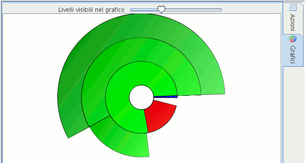

Illustration
1: Main panel switched to"Actions"
The main panel is the widest part of the window, and provides two views:
the actions table
the donut chart
Click on the tabs on the right side to switch view.
To see the actions list table, click on the Actions tab.
Illustration
1: Main panel switched to"Actions"
By default, the table background lets you see the donut chart. To disable this feature click on the |View|Show chart shadow| menu item.
Click on the Charts tab to leave the actions table and see only the donut chart.

Illustration
2: Main panel switched to"Charts"
The chart represents the duration of the actions that belong to the currently selected task or its sub-tasks.
Every chart level represents a sub-tasks level.
To see some additional info regarding a chart area, leave move the mouse on it.